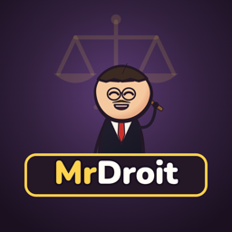

MrDroit
Les arrêts essentiels de la licence de droit, expliqués en 1 minute, en vidéo verticale.
La chaîne
MrDroit publie de courtes vidéos pédagogiques sur les grandes décisions de justice étudiées en licence de droit : les faits, la question posée au juge, la solution et sa portée. Chaque vidéo s'appuie sur le texte officiel de la décision. Personnages imaginaires, images d'illustration, voix de synthèse.
Contenu pédagogique, pas un conseil juridique.
L'application MrDroit
« MrDroit » est aussi le nom de l'outil privé qui envoie ces vidéos sur les comptes officiels de la chaîne (YouTube, Instagram, Facebook, TikTok). Il n'est utilisé que par le propriétaire de la chaîne, pour ses propres comptes. Il n'est pas proposé au public.